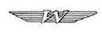
Walter Automobil- u. Motorenfabrik
Walter Mikron III, 65 PS
24,00€
 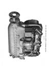
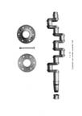
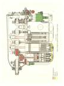
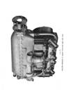
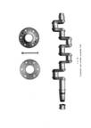
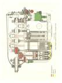
Dateigröße: 9 MB
Handbuch, description, operating, control, maintenance, engl. Text, 1946, 100 Seiten
Bestell-Nr.: LAH-332
Walter Minor 4-III, 105 PS
39,00€
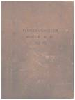
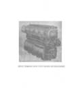
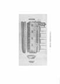
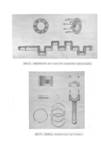
Dateigröße: 90 MB
Luftgekühlter Vierzylinder-Viertakt-Reihen-Motor, Techn. Beschreibung, Bedienungsanweisung, Wartung, 120 Seiten Ersatzteilliste, Auflistung und bildliche Darstellung aller Baugruppen und Bauteile, 3-sprachig (e, f, d), Ausgabe 1957, 168 S.
Bestell-Nr.: LAH-330
Walter Minor 6-III, 160 PS
24,00€
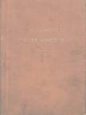
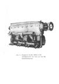
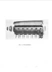
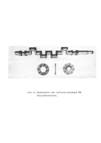
Dateigröße: 60 MB
Luftgekühlter Sechszylinder-Viertakt-Reihen-Motor, Handbuch, 155 Seiten
Bestell-Nr.: LAH-331
Walter K14-I, K14-II, 700 PS
24,00€
 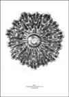
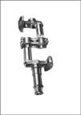
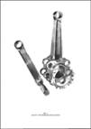
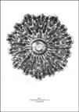
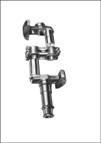
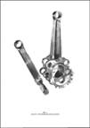
Dateigröße: 16 MB
Luftgekühlter Vierzehnzylinder Vergaser-Doppelstern-Motor, Handbuch, 90 Seiten
Bestell-Nr.: LAH-333